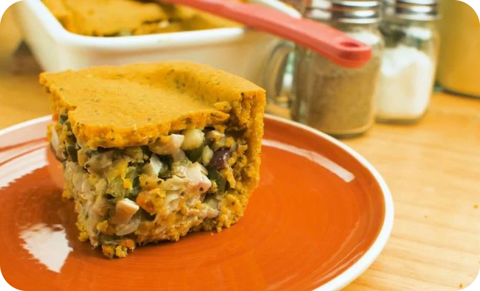
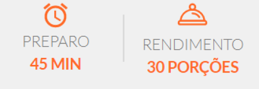
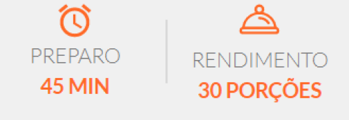

Receitas para se começar:
EMPADÃO VEGANO


INGREDIENTES
- 240g de palmito pupunha
- 150g de vagem bem picadinha
- 1 lata de seleta de legumes
- 50 g de azeitona preta fatiada
- 100 g de cebola
- 30 ml de azeite
- 2 g de orégano
- 120 ml de água
- 1 colher (sopa) de amido de milho
- sal a gosto
- pimenta-do-reino a gosto
MASSA
- 1 caixinha de grão-de-bico
- 20 ml de azeite
- sal a gosto
- 3 g de cúrcuma
- 150 g de farinha de arroz
- 60 ml de água
MODO DE PREPARO
- Para o recheio, refogue a cebola com azeite.
- Acrescente o palmito, a vagem, a cenoura e o orégano; cozinhe com a água até que fique ao dente. Tempere com
sal e pimenta.
- Coloque o amido de milho dissolvido em um pouco de água, mexendo sempre até incorporar no recheio.
- Acrescente a azeitona e desligue o fogo.
- No processador, coloque o grão-de-bico, o azeite, sal, água e a cúrcuma; processe para misturar.
- Na tigela com a farinha de arroz, adicione a mistura e mexa com a ajuda das mãos até formar uma massa firme.
- Forre o fundo de pequenos recipientes com parte da massa.
- Coloque o recheio.
- Cubra com uma outra parte da massa.
- Leve forno preaquecido a 180° C por aproximadamente 30 minutos.
PÃO DE QUEIJO VEGANO
 

INGREDIENTES
- 2 xícaras de polvilho doce
- 1 xícara de polvilho azedo
- 1/3 xícara de óleo
- 2 xícaras de batata salsa amassada (tipo purê)
- 1 xícara de água quente
- sal a gosto
- temperos a gosto (salsinha desidratada, ervas finas)
MODO DE PREPARO
- Cozinhar em água fervente, a batata salsa já descascada.
- Reservar a água utilizada após o fervimento.
- Amassar as batatas, até a consistência de um purê.
- Em uma travessa, adicionar o polvilho azedo, o polvilho doce, o óleo, o sal e a água quente do fervimento
das batatas.
- Misturar bem, podendo utilizar as próprias mãos, até virar uma massa uniforme.
- Acrescentar os temperos que preferir.
- Pode separar a massa em pedaços e acrescentar temperos diferentes para cada pedaço.
- Fazer bolinhas, de preferência pequenas, e coloque em uma assadeira antiaderente com espaço entre uma
bolinha e outra,
pois quase duplica de tamanho.
- Em forno preaquecido a 180°C, colocar seus pães de queijo veganos por aproximadamente 20 minutos, ou quanto
achar necessário.